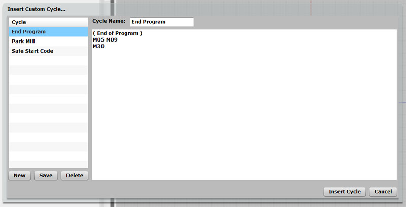

Stop GCode Errors Now With a CNC Editor, Simulator, or Backplotter

Spindle Alarm!
Introduction
Once you're comfortable with MDI uses for g-code, it's time to get together some tools for doing more extensive g-code programming.
Even if most of your g-code is produced via CAM software, It's important more often than not to be able to do some hand tuning to the g-code. There's also a whole class of simple g-code programs that can be created without recourse to CAM, sometimes much faster. Plus, there are times when CAM software produces an error, or at least it does something you didn't expect, don't want, and can't get it to stop doing. Finding the errors in the gcode before it gets to the machine can save you time and money. For all those cases, you need a proven G-Code Editor and Simulator.
Let's leave aside the issue of writing g-code from scratch for a minute, and look at some scenarios where it might be handy to tune up some CAM produced g-code. There's a bunch of different cases where this can be really helpful and productive. Suppose, for example, that you want to change the feeds and speeds in some portion of the program and you don't want to have to run all the way back through the CAM package to do that. It's not hard to bring up the g-code in an editor and make the changes.
Or, let's say that you get the program down on the shop floor, you load it up in the controller, and you suddenly notice there's an error due to a bug in the CAM software. Often these are simple errors, even one single errant motion. Sometimes its faster just to fix these by editing the code rather than trying to get back into the CAM and "trick" it into not making the error. I know a machinist whose CAM kicks out an errant move whenever it moves to a new work offset. You can see it right in the g-code and delete it. He may have a bad post or some other problem, but he's talked to the CAM people several times and they haven't been able to help, so he just edits the programs.
Suppose the CAM programmer didn't account for the fixturing quite correctly. The part will be cut correctly, but some of the positioning moves are going to run into clamps or what not. It's pretty easy to program by hand around those obstacles.
These are all real simple examples. You can also quickly get to cases where a little hand programming might optimize a program quite a lot. Perhaps you can't quite get the CAM program to do things the way you want it to, but you can get it to do some parts and you can accomplish the rest with a little judicious hand programming.
A couple of other case for hand working g-code:
- You don't have the CAM any longer but need to be able to change the program.
- You want to adapt the program to the differences between controllers without re-running the CAM against a different post-processor.
The list goes on, but you get the idea. We surveyed users of our own G-Wizard GCode Editor, and here's what they told us they were using it for:

A good CNC Editor is a handy thing to have on hand!
Feature Buying Guide
What are some of the key features to look for when shopping for a CNC Editor? They fall into these key categories, and we'll run through some of the more important features for each one.
- Text Editing Features: These features determine how easy it is to edit the text of your program.
- Informational and Power Editing Features: These features give you extra power in understanding your program, or in creating it quickly.
- Program Revision Features: The features help you to make mass revisions to your program, for example, to renumber the program lines.
- G-Code Simulator and Backplotter Features: These features allow you to watch the g-code program execute in simulation.
- Error Checking Features: If your goal is to make sure the gcode is ready to run when it hits the CNC machine, you want to have comprehensive error checking right in your Editor/Simulator.
Text Editing Features
There are programmers out there using just Windows Notepad or perhaps a generic (non g-code) programmer's editor of some kind. Nothing wrong with that, but having a text editor that actually "knows" g-code and was designed for it can result in a more productive environment. Before we get too far into the g-code specific features, make sure your editor has the typical features any good text editor should have and that you're used to. The basics like clipboard support, multi-level undo, and a powerful search and replace capability. You're no doubt already used to some kind of editor, see how the CNC Editor you're checking into compares with it in terms of the features you're already used to.
Beyond those basics, here are some other capabilities you may want to have:
Keyboard Shortcuts
Touch typists realize pretty quickly that having to jump back and forth between mouse and keyboard slows them down quite a bit. Look for editors were you can accomplish most everything with either the keyboard or mouse so that you don't have to leave the keyboard if you don't want to.
Find and Replace
G-code programmers use find and replace a lot, so it's important to have a good one. CNCCookbook's G-Wizard Editor uses a special Find/Replace toolbar to make find/replace into a true power tool. With the toolbar, there is no popup obscuring part of your program that you have to peer around. You can seamlessly move back and forth between editing and find/replace as you move through the program. Accessing Find/Replace is easily done with the mouse via menu or toolbar and from the keyboard simply by pressing Ctrl + F.
Find/Replace Toolbar is easier than peering around a popup dialog...
Jumping in a G-Code Program
G-code has a pretty regular structure, and some features in it are so important it's worth having a special "Jump" command to move through that structure. For example, you may want to jump to the next g-code "N" block number, actual line number (e.g. N10 might be on the 1st physical line), next error in the program so you can fix it, or to the next Toolchange. Like Find/Replace, it's convenient to have Jump as a toolbar rather than a popup dialog, and it is convenient to access it either with the mouse or the Ctrl + J keyboard shortcut.
Jump toolbar...
Appending or Inserting another File
After a while, you'll have accumulated a whole collection of g-code files. Not long after you'll be wanting to combine these files in various ways. Make sure your CNC Editor can append a file to the one being edited or insert it in place.
Capitalization
A lot of g-code is written in capital letters, except for text inside comments. It's nice to have an editor that can automatically capitalize outside the comments to save where and tear on the shift key as you're typing.
Informational and Power Editing Features
Whether you're a beginner or an expert, you won't always remember every last detail of your controller's g-code dialect--it's only a matter of degree that separates the beginners and the experts. Perhaps you can't quite remember which letters are used with a particular canned cycle. Maybe you don't remember which G-Code is used for the peck drill cycle. This comes up whether you're reading or writing g-code, so you'll want features that help going both ways. In addition, a lot of useful information is missing from the g-code program. Sure, you could look it up or calculate it (quick, how many degrees does that arc subtend?), but why bother if your CNC Editor will just figure it out for you?
Hints: G-Code in Plain English
Hints are a feature that explains g-code in plain English. This is helpful for learning the g-code as well as for getting a refresher on the details you may have forgotten, and for collecting information that is otherwise not obvious. In the G-Wizard CNC Editor, you can view the Hint for the currently selected line of g-code, or you can switch to the Hints tab and see Hints for all the lines laid out together.

Hints View shows you a quick explanation of what the g-code does and it also shows error messages. For example, the current post does not support the G4 used in this program...
Here is a typical example of a Hint for a line containing an arc:
Line N400 has an arc. The Hint below the backplot tells all...
Suppose you haven't learned arcs yet, and are trying to follow the line of g-code:
N400 G03 X0.5 Y0.375 I0. J0.125 F7.0
The fact we don't yet know how arcs work makes the Hint even more valuable. Let's take a close look at the Hint:
The Hint for an Arc...
It tells us the following:
- In bold at the top is the original text of the line. This is useful if we're in Hints view and can't see the g-code line text.
Right below the bold, it starts telling us all about what the line does:
- The Block Number is N400
- G03 performs Counter-clockwise circular interpolation. In other words, it tells the machine to move the cutter in a circular arc at feed speed.
- The Feed Rate was set to 7.0 on this line.
- We see what the IJK values parse to be. In this case, we have I=0, J=0.125, and no K
- The endpoint of the arc after the move is 0.5, 0.375, -0.04
- The coordinates of the center of the arc are 0.375, 0.375, -0.04.
- The center was determined by IJK (as opposed to R, which is another way)
- The angle of the arc runs from 270 degrees to 0, a total of 270 degrees.
After all that, the Hint skips a line and gives us a time. This is telling us how long it will take the g-code program to reach this line and finish it if we execute on the machine. In this case, we can see the arc will be completed 4 minutes and 54.7 seconds after the program starts executing.
Phew, that's a lot of data spewed forth, but it can be extremely handy to have when you're trying to figure out what a g-code program is doing or what's wrong with one. And, like I said, it's hard for an expert to tell all of this stuff at a glance.
GWE gives this level of detail for each and every line of the program.
Wizards: Remembering the Details for you
G-Code is powerful, but it is also somewhat arbitrary. Wizards are there to help you overcome the arbitrary part by remembering the details for you. If Hints are there to help with reading G-Code, Wizards are there to help with writing G-Code. In G-Wizard CNC Editor, the Wizards may be triggered either via Toolbar with the mouse or via Keyboard shortcut:
Select from 6 different Wizards on the Toolbar for G-Codes, M-Codes, etc...
After you've chosen the Wizard, it pops open with more options. For example, here is the G-Code Wizard:
The Popup Wizard for G-Codes...
From the Wizard, you can just key in a number directly: for example, type Ctrl + G then keep typing "3" then enter and a G03 is entered. If you get in the habit of typing "Ctrl-G" instead of just "G", the Wizard will be there to catch you if you forget how the code works. If you close your eyes, you'd never know it was there. Once it's up, you can scroll through the options, look at them by category (e..g "Motion", CoorDinate", etc.), see what parameters are used, and also see the hint information (under "Notes") associated with that G-Code.
Code Snippets as Custom Canned Cycles
Over time, you're going to build up a library of code snippets that you like to use when programming. G-Wizard makes it easy to manage these as "Custom Cycles". Just click the "Custom" Wizard and you'll see how it works:

You can create new cycles, edit the existing ones, or insert the code into your program. GWE provides three default cycles for you to start with:
- End Program: The set of steps you want to do at the end of every program.
- Park Mill: It's nice to configure some code that "parks" the mill table for easy loading and unloading by the operator.
- Safe Start Code: The steps you want to begin every program with so it starts out in a known safe state.
Program Summary Information: What's the Big Picture?
In addition to detailed specific information on each g-code line, G-Wizard Editor also provides useful overall information about the program. GWE has an "Info" tab that holds the overall information. Take a look at the illustration to the right to see what the Info tab looks like. As you can see, it tells you a variety of information about your g-code program including:
- It's size both in terms of lines and bytes. If you're trying to make your program fit in the limited RAM memory available to an older controller, it's important to be able to tell quickly how you're doing.
- For each axis, GWE will spell out the range of motion used as well as the length, width, and height these ranges imply. You get the information both overall and in terms of just feedrate motion. The rapids will nearly always extend outside the feedrate envelope, but the feedrate envelope may give you a good idea of the rough stock size needed by the program.
- You get to see the range of spindle rpm's used as well as the range of feedrates used in the program.
- You get to see the overall predicted run time of the program.
- Lastly, there is a count of the different classes of operations within the program, as well as a count of the number of errors GWE discovered in your program. |
|
Program Revision Features
You've got a big g-code program, and you want to make some pretty major changes that could affect many lines of code. What features does your CNC Editor offer to facilitate those changes?
In GW CNC Editor, these features are called, naturally enough "Revisions". There's a long list of them available from the Tools Revisions popup:

Making G-Code Revisions is easy with the right tools...
Typical Revisions you'll want to be able to make include:
- Adding or deleting spaces and blank lines.
- Adding or removing block skip characters (/) over sections of g-code.
- Changing capitalization
- Removing comments from blocks and commenting out or uncommenting blocks.
- Eliminating control, garbage, and other non-printing characters.
- Expanding tabs to spaces
- Renumbering block sequence numbers ("N" numbers)
- etc.
G-Wizard Editor includes a long list of different Revisions, and you can check them all out on the Revisions Page.
Error Checking Features
Many Shops have found that checking every single program before it goes to the machine saves a lot of time and money. But what's needed to check a program?
Most G-Code Editor/Simulators will show you a Backplot--that's a visual depiction of the path the tools will follow. It's a great first start, and we'll talk more about it in a minute, but there's more that's needed. There are problems that can make your machine alarm out that don't show up in the backplot.
For example, suppose you don't have your programming for an arc quite right. A common alarm for that would be a warning that the distance from the arc endpoints to center differs by too much. You can hardly blame the control--every point on an arc should be equally distant from the center, right? But this is an easy error to make, and the control has a tolerance.
Here's another--what if you try to perform a cut without having started the spindle or set the feedrate? Either of these will produce an alarm, or worse, plow the cutter that's not moving into the workpiece, likely damaging both.
What you want is comprehensive error checking for these kinds of things so you identify problems quickly and get them fixed before the program lands on the machine..
G-Code Simulator and Backplotter Features
This complex area is worthy of a whole 'nother page, so keep reading!